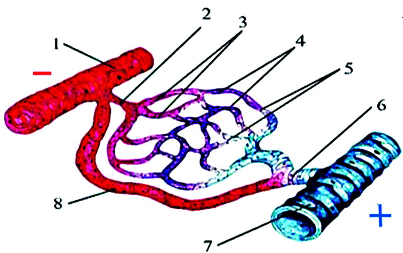
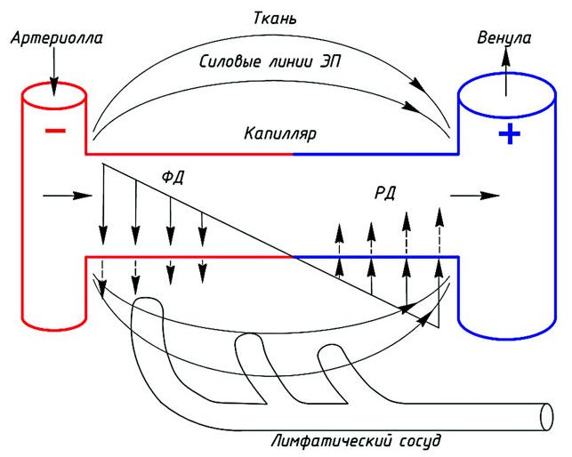
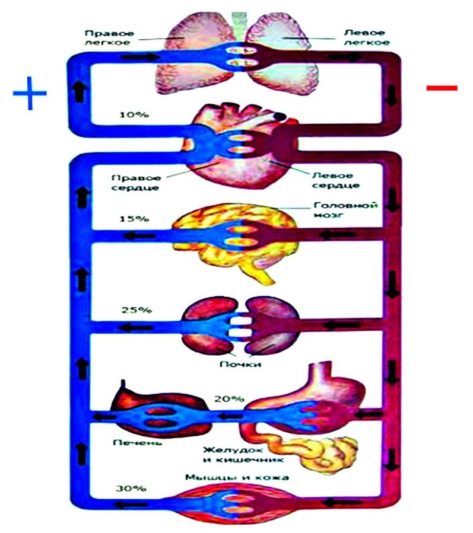

В сороковых годах 20-го столетия американский биохимик венгерского происхождения Альберт Сент-Дьёрдьи пришёл к выводу, что феномен жизни нельзя должным образом объяснить просто наличием каких-то химических веществ: необходимо, чтобы эти вещества находились в определённом электрическом состоянии. Согласно этой точке зрения, живые и мёртвые животные различаются по своему биоэлектрическому, а не биохимическому статусу [1]. Ведь жизнь есть непрерывный процесс поглощения, преобразования и перемещения энергии различных значений и различных видов. Необходим механизм, объясняющий миграцию энергии внутри живого тела. С нашей точки зрения, таким механизмом может быть кровеносная артериально-венозная система (АВС), рассматриваемая как гальванический элемент - генератор электрического поля.

рис. 1
Система организованной энергии
В ХХ в. приобрела признание гипотеза энергетического дисбаланса при старении. Известный учёный А. А. Богданов (1927) отводил энергетическим функциям решающую роль в обеспечении жизнеспособности организма, который он понимал как «систему организованной энергии», как «комплекс активности» [2]. Он сослался на применимость к толкованию жизнедеятельности человека принципа Ле Шателье - Брауна (1884 г.) - если на систему, находящуюся в устойчивом равновесии, воздействовать извне, изменяя какое-либо из условий равновесия (температура, давление, концентрация, внешнее электромагнитное поле), то в системе усиливаются процессы, направленные на компенсацию внешнего воздействия. Развивая этот принцип, Э. С. Бауер (1935) обосновал закон устойчивого неравновесия живых систем, который открывает путь к пониманию развития как внутреннего свойства системы [3]. Сторонники такого взгляда на старение убеждены в том, что генерация свободной энергии в организме молодых и старых людей различна по скорости и масштабам. При её недостатке падает активность жизненных процессов, стабильность энергетического равновесия становится невозможной. Если уровень энергетической активности окажется не соответствующим потребностям организма, продолжение жизни станет невозможным. Это будет означать, что «биологические возможности организма исчерпаны» [4].
Что генерирует так называемую «свободную энергию» и что она из себя представляет? Для этого надо задаться вопросом о её роли в процессах жизнедеятельности.
Электрические взаимодействия
Как известно, обязательным условием существования любого организма является постоянный приток питательных веществ и постоянное выделение конечных продуктов химических реакций, происходящих в клетках. Приток питательных веществ и утилизация конечных продуктов осуществляется кровеносной системой. Артериальная кровь несёт питательные вещества, а венозная утилизирует продукты обмена. Преобразование артериальной крови в венозную происходит в микроциркулярном русле.
Венозная кровь, поступая в лёгкие, освобождается от СО2 и обогащается кислородом. В результате этого повышается pH крови, что, как известно, увеличивает её отрицательный заряд. При выходе из сердца заряженная кровь, под действием гидравлического пульсирующего давления, движется в направлении микроциркулярного русла. Процесс разрядки (рис. 1) происходит при переходе жидкости с повышенным электрическим потенциалом, под воздействием фильтрационного давления (ФД), из артериальной части капилляра в окружающую ткань.
Далее, с понижением фильтрационного давления ниже коллоидно-осмотического у венозного конца капилляра, жидкость из тканевого пространства, с пониженным электрическим потенциалом и pH, под воздействием реабсорбционного давления (РД) переходит обратно в кровь. И кровь становится венозной - разряженной.
Таким образом, кровь при трансформации из артериальной в венозную, за счёт обменных процессов в тканях, не только участвует в них, но и в конечном результате понижая свой исходный электрический потенциал, разряжаясь, формирует самоподдерживающееся электрическое поле (ЭП) в непрерывном режиме циркуляции крови, а затем со скоростью потока крови в 2 раза меньше, чем в артериальном русле, переносит пониженный эл. заряд в лёгкие и сердце, где очищается и дозаряжается.
Т. е. перенос электрических зарядов в кровеносной системе осуществляется не за счёт разности потенциалов, как в классической эл. цепи, а за счёт гидравлического потока крови, несущего эти заряды. Причём разность потенциалов между двумя разнозаряженными, разнонаправленными, разноскоростными и с различными уровнями давлений носителями - артериальной и венозной кровью - порождает электрическое поле. Это поле определяет электрические взаимодействия в межклеточном пространстве, воздействуя на процессы, в нём происходящие.
Соединение органов и тканей
Наличие разности потенциалов между артериальным и венозным руслом кролика, составившей -0,88±0,01 В, было показано в работе [5], что подтверждает предположение об артериально-венозной системе (АВС) как гальваническом элементе, в виде двух разнозаряженных электродов, а организм в целом представляется как параллельное электрическое соединение органов и тканей (рис. 2).
Т. е. соблюдаются условия для параллельного соединения:
UАВС = U1 = U2 = ... = Un (1)
IАВС = I1 + I2 + … + In (2)
Следовательно, величина электрического напряжения UАВС между артерией и веной одинакова для всех органов, но величина ионных токов I в них различна и зависит от уровня их потребностей.
Итак, потенциальный конец АВС есть заряд артериальной крови, формируемый лёгкими и сердцем, а разряженный конец, пониженный заряд венозной крови, образовывается в результате метаболических процессов в тканях и органах. Причём разница потенциалов UАВС - величина постоянная в определённых границах, отслеживаемая ЦНС и поддерживаемая с помощью анастомозов (регулируемые шунты) - электрический гомеостаз (рис. 3).
1 - артерия, 2 - артериола, 3 - артериальные капилляры (прекапилляры), 4 - капилляры, 5 - венозные капилляры (посткапилляры), 6 - венула, 7 - вена, 8 - артериоло-венулярный анастомоз
При помощи сократительных механизмов анастомозы могут уменьшить или полностью закрыть свой просвет, в результате чего течение крови через них прекращается, и кровь поступает в капиллярную сеть. Благодаря этому органы получают кровь в зависимости от потребности, связанной с их работой, ограничивая кровоснабжение тканей, особенно так называемых менее важных органов, чтобы увеличить кровоснабжение жизненно важных (мозга, сердца). Это в свою очередь поддерживает постоянный потенциал UАВС, ведь переток крови идёт между разнозаряженными элементами, в то же время поддерживается количество энергии в виде ионных токов для более важных органов. Ведь величина ионных токов в конкретном органе, при постоянстве UАВС, зависит от количества крови в микроциркулярном русле.
Из этого можно сделать вывод, что кровеносная система является электрическим органом, управляющим энергетикой обменных процессов организма. Количество поступающей энергии, обеспечивающей постоянство UАВС, с возрастом падает, следовательно, для продолжения работы всей системы необходимо уменьшать потребление в виде ионных токов отдельных органов вплоть до их отключения.

рис. 2
Энергия человеческого поля
Следует отметить, что электрическое поле, порождённое UАВС, определяет электрические взаимодействия в межклеточном пространстве и непосредственно влияет на работу клетки. Следовательно, контролируя и наблюдая поведение состояния клетки, знака заряда её ядра [6] после целенаправленного энергетического воздействия, можно судить о степени отклика всей системы.
Исходя из вышеизложенного, можно утверждать, что свободная энергия - это энергия электрического поля, порождённого разностью потенциалов между артериальными и венозными концами капилляров в области микроциркулярного русла межклеточного пространства, при превращении артериальной крови в венозную. Постоянный ток, порождённый этим полем, вызывает в тканях перераспределение ионов, что сопровождается сложными физико-химическими процессами, ведущими к изменению проницаемости мембран, деятельности ферментов и уровня обменных процессов.
Выводы
- Центральным элементом в энергетической цепи преобразования и перемещения энергии является уровень свободной энергии, определяемой UАВС, поддерживающий активность жизненных процессов.
- В качестве определяющего фактора активности жизненных процессов необходимо рассматривать уровень и структуру ионных токов, порождаемых UАВС.
- Следствием снижения энергопродуцирующего потенциала UАВС является возрастнозависимое затухание жизненных процессов и увеличение скорости образования супероксидных радикалов.
КОСТРЖИЦКИЙ О.К.,
МАСЛОВ Л.И., д. т. н., профессор, академик РАЕН,
Генеральный директор НИИ «Здоровьесберегающих технологий»
129626, г. Москва, ул. Новоалексеевская, д. 21, офис 406.
Тел.: 8 (495) 748-53-46, 8 (495) 543-74-96
www.medicinaveka.info
Литература:
- Сент-Дьёрдь Альберт. Биоэнергетика. - М.: Государственное издательство физико-математической литературы, 1960 г.
- Богданов А. А. Тектология - Всеобщая организационная наука. Часть 2. - Л.-М., 1927 г.
- Бауэр Э. С. Теоретическая биология - М.-Л.: Изд. ВИЭМ, 1935 г., с. 43.
- Фрольки В. В. Старение и биологические возможности организма. - М.: Наука, 1975 г.
- Устройство для определения электрических и магнитных свойств эритроцитов. Классификация по МПК: A61B
Патент на полезную модель №: 49999
Дата публикации: Суббота, Декабрь 10, 2005
Начало действия патента: Вторник, Июнь 14, 2005
- Способ исследования функционального состояния человека
Патент Российской Федерации
Номер патента: 2009494
Класс(ы) патента: G01N33/483
Номер заявки: 4953957/14
Дата подачи заявки: 10.06.1991
Дата публикации: 15.03.1994
Заявитель(и): Харьковский государственный университет
Автор(ы): Шахбазов В. Г.; Шкорбатов Ю. Г.
Патентообладатель(и): Шахбазов Валерий Гаевич; Шкорбатов Юрий Георгиевич